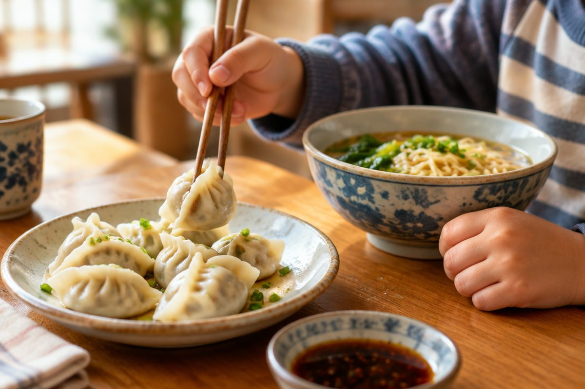

식당에서 중국어로 주문해 볼까요?

중국 식당에 갔는데 메뉴를 주문해야 해요! 두근두근하지만 걱정 마세요. '我要(wǒ yào)' 한마디만 알면 먹고 싶은 음식을 시킬 수 있어요.
我要(wǒ yào) — '~ 주세요'
要(yào, 야오)는 '원하다, 필요하다'예요. 我要 뒤에 음식 이름을 붙이면 '나는 ~을 원해요', 곧 '~ 주세요'가 돼요.
我要饺子。(wǒ yào jiǎozi, 워 야오 지아오쯔)는 '만두 주세요.'예요. 식당에서 종업원을 부를 때는 服务员！(fúwùyuán, 푸우위엔)이라고 해요.
服务员！我要饺子。(저기요! 만두 주세요.)
몇 개인지 말하기 — 세는 말(양사)
중국어는 수와 물건 사이에 '세는 말'을 넣어요. 우리말 '한 그릇, 한 잔, 한 개'와 비슷해요.
个(ge, 거)는 '개', 碗(wǎn, 완)은 '그릇', 杯(bēi, 베이)는 '잔'이에요. 一个汉堡(yí ge hànbǎo)는 햄버거 한 개, 一碗面条(yì wǎn miàntiáo)는 국수 한 그릇, 一杯可乐(yì bēi kělè)는 콜라 한 잔이에요.
一는 뒤 글자에 따라 yí, yì로 소리가 살짝 바뀌니 병음을 보고 읽어요. 두 개를 말할 때는 二이 아니라 两(liǎng)을 써요. 两个汉堡 = 햄버거 두 개!
我要一碗面条。(국수 한 그릇 주세요.) / 我要两个汉堡。(햄버거 두 개 주세요.)
종업원이 묻는 말에 대답해요
종업원은 먼저 你要什么？(nǐ yào shénme, 니 야오 선머), '무엇을 드릴까요?'라고 물어요. 그러면 我要 ~ 로 대답해요.
주문한 뒤에는 还要别的吗？(hái yào bié de ma, 하이 야오 비에 더 마), '다른 것도 필요하세요?'라고 물을 수 있어요.
더 필요 없으면 不要了，谢谢。(bú yào le, xièxie, 부 야오 러 씨에시에), '이제 됐어요, 고마워요.'라고 해요. 종업원은 好的(hǎo de, 하오 더), '알겠습니다'라고 대답해요.
A: 还要别的吗？ B: 不要了，谢谢。 A: 好的。
중국 음식 이름을 알아 두어요
饺子(jiǎozi, 지아오쯔) 만두, 面条(miàntiáo, 미엔티아오) 국수, 米饭(mǐfàn, 미판) 밥이에요.
汉堡(hànbǎo, 한바오) 햄버거, 可乐(kělè, 커러) 콜라, 水(shuǐ, 수이) 물이에요. 좋아하는 음식 이름을 넣어 我要 ~ 로 연습해 보세요.
我要一碗米饭和一杯水。(밥 한 그릇과 물 한 잔 주세요.) — 和(hé)는 '~와/과'
핵심 낱말
- 要 (yào)
- 원하다, 필요하다 (我要 = ~ 주세요)
- 个 (ge)
- 개 (물건을 세는 말)
- 碗 (wǎn)
- 그릇 (그릇에 담긴 음식을 세는 말)
- 杯 (bēi)
- 잔 (음료를 세는 말)
- 服务员 (fúwùyuán)
- 종업원
꼭 알아야 할 표현
| 服务员！ | 저기요! (종업원을 부를 때) | fúwùyuán (푸우위엔) |
| 你要什么？ | 무엇을 드릴까요? / 뭐 먹을래? | nǐ yào shénme (니 야오 선머) |
| 我要一碗面条。 | 국수 한 그릇 주세요. | wǒ yào yì wǎn miàntiáo (워 야오 이 완 미엔티아오) |
| 我要两个汉堡。 | 햄버거 두 개 주세요. | wǒ yào liǎng ge hànbǎo (워 야오 량 거 한바오) |
| 我要一杯可乐。 | 콜라 한 잔 주세요. | wǒ yào yì bēi kělè (워 야오 이 베이 커러) |
| 我要饺子。 | 만두 주세요. | wǒ yào jiǎozi (워 야오 지아오쯔) |
| 还要别的吗？ | 다른 것도 필요하세요? | hái yào bié de ma (하이 야오 비에 더 마) |
| 不要了，谢谢。 | 이제 됐어요, 고마워요. | bú yào le, xièxie (부 야오 러, 씨에시에) |
| 好的。 | 알겠습니다. / 좋아요. | hǎo de (하오 더) |
| 米饭 | 밥 | mǐfàn (미판) |
한 줄 정리
- 我要 + 음식: '~ 주세요.' 종업원은 服务员！으로 불러요.
- 수와 음식 사이에 세는 말을 넣어요: 一个(개), 一碗(그릇), 一杯(잔). 2는 两!
- 你要什么？(무엇을 드릴까요?) / 还要别的吗？(더 필요하세요?) / 不要了，谢谢。(됐어요, 고마워요.)
학교 교육과정 연결 (가정 학습 과정)
초등학교 정규 교육과정에는 중국어가 없어요. 처음 배우는 아이를 위한 가정 학습용 입문 단원이에요.
참고한 자료
- 汉语拼音方案 (한어 병음 방안, 1958년 중국 전국인민대표대회 승인) — 병음·성조 표기 기준